Security Whitepaper Series
Read in order: trust boundary -> control matrix -> verification -> token hardening -> transport and auditability.
Part 2 converts the threat model from Part 1 into a working control matrix. This chapter is written for teams preparing security sign-off and rollout checklists, not for marketing narratives.
Why this chapter follows threat modeling
Part 1 defined boundary and threat assumptions. Part 2 translates those assumptions into practical controls: preventive, detective, and procedural. Part 3 then verifies whether those controls actually work in operations.
1. Control matrix method
Each control entry answers four questions: what risk it addresses, where it is enforced, who owns it, and how to verify it. Without those four fields, control catalogs become documentation overhead and fail during incidents.

2. Preventive controls
- Least-privilege credential scope: restrict provider permissions to required scan and review path.
- Environment separation: isolate production and non-production credentials and profiles.
- Token access control: require bearer token for protected local API routes.
- Route governance: use explicit proxy profiles for environments with controlled egress.
These controls reduce exposure probability but do not by themselves prove operational readiness. Verification is still required.
3. Detective controls
- Structured failure taxonomy: stage/reason diagnostics for faster root-cause isolation.
- Operational logs: local runtime evidence for execution path and error context.
- Review artifacts: export packs supporting cross-team evidence review.
- Release traceability: release notes and ledger alignment for behavior change auditing.
Detective controls are essential for controlled recovery. Prevention failures happen; detection quality determines recovery time and incident communication quality.
4. Procedural controls
- Owner-based review before destructive remediation actions.
- Credential rotation cadence and documented revocation process.
- Change-management linkage between release notes and operational runbooks.
- Post-incident review that updates control runbooks and checklist items.
Procedural controls are often underestimated. In multi-team environments, they are usually the difference between one-hour containment and multi-day confusion.
5. Control-to-proof mapping
For each control, capture a proof artifact and review cadence. Examples include:

- token-enforced endpoint checks with expected unauthorized response behavior;
- proxy-profile test logs for route validation;
- checksum verification records for installer or package rollouts;
- release evidence packets tied to roadmap and ledger entries.
This mapping makes audits faster because reviewers do not need to guess where evidence lives.
6. Case study: control gaps that usually appear in first rollout
The first rollout often reveals three predictable gaps. First, credentials are scoped too broadly "for convenience" and never reduced. Second, token controls are enabled but not validated against real misuse scenarios. Third, runbooks contain control statements without proof references. Teams can close these gaps quickly by enforcing control-to-proof mapping as a release requirement.
The key lesson is that control statements should be treated as executable policy, not policy prose. If a control cannot be verified in under ten minutes, it is likely incomplete.
Implementation FAQ for control owners
Q: Should we prioritize preventive or detective controls first? Prioritize a minimum set of both. Preventive-only strategies fail when incidents occur and no diagnostics exist.
Q: How do we avoid control fatigue? Keep control entries short, map each to one owner, and remove duplicate controls that do not produce distinct evidence.
Q: What does "good enough" look like for first production wave? Least privilege, token enforcement, route validation, release integrity proof, and owner-approved remediation workflow.
Control operations notes: keeping the matrix usable
Control matrices often degrade after launch because entries become stale or too detailed to maintain. To avoid this, keep each control entry concise and action-oriented: objective, owner, verification method, and evidence location. If an entry requires a full page to explain, split it into independent controls with separate owners.
Another practical issue is uneven ownership maturity. Some controls have clear security ownership, while others sit between platform and operations. For hybrid controls, assign one accountable owner and one supporting owner; avoid shared ownership without accountability. During incidents, "joint ownership" without clear accountability causes delays.
A third issue is control overlap across teams. Different teams may create similar controls with different naming. Standardize naming and maintain a single matrix source to prevent duplicate reporting and audit confusion. Control sprawl is a hidden cost that reduces reviewer confidence.
Finally, review control exceptions regularly. Exceptions are normal in real environments, but unreviewed exceptions become permanent risk. Keep exception records with expiry date, risk statement, and remediation plan. This makes risk acceptance explicit rather than accidental.
Matrix review check for operational readiness
- Every high-risk control has an owner and proof artifact.
- Every exception has expiry and remediation timeline.
- Every critical control appears in both runbook and periodic verification list.
- Control naming is consistent across docs, dashboards, and release evidence.
Control audit notes: avoiding documentation theater
A control matrix can look complete while still being weak in audit context. The most common cause is missing evidence linkage. A control says "token rotation enforced," but there is no reference to actual rotation records or revocation tests. To prevent this, require each high-risk control to include one machine-verifiable or log-verifiable proof path. This keeps controls anchored to operations.
Another practical improvement is evidence aging policy. Proof artifacts lose value when too old. Define freshness thresholds for each control category. For example, token and route controls should have fresher evidence than static policy statements. During quarterly review, flag stale evidence as control debt and assign remediation owner.
Finally, run one cross-functional control review each quarter with security, platform, and operations owners in the same room. The objective is to detect interpretation drift early. If teams interpret the same control differently, incident response quality drops even if the control text is technically correct.
Appendix: control quality scoring and maintenance
A practical way to sustain control quality is to score each control quarterly on four dimensions: clarity, evidence quality, ownership clarity, and operational burden. Controls with high burden and low evidence value should be redesigned or removed. Controls with low clarity should be rewritten in operator language and paired with one concrete verification method. This scoring approach helps teams improve control systems without adding unnecessary complexity.
Another important practice is dependency mapping between controls. Some controls depend on others to be meaningful. For instance, route governance controls may depend on token hardening controls for complete protection. Mapping dependencies prevents isolated control optimization that leaves systemic gaps.
For audits, retain a control-change log that records why controls were added, changed, or retired. This log provides context that auditors often ask for when reviewing evolving control environments. Without change context, even strong current controls can appear inconsistent historically.
In day-to-day operations, rotate control review leadership among security and operations owners. This cross-ownership review model reduces blind spots and improves shared understanding of practical constraints.
Data sources for this chapter
- API Token Guide and API Reference for auth and route controls.
- Troubleshooting flow for diagnostic taxonomy expectations.
- Release Ledger and Roadmap for control evolution evidence.
Next: verification and incident readiness
Continue to Part 3 for verification sequence, incident triage structure, and operator readiness checks.
Security Review Checklist
Download the operator checklist used in enterprise reviews
Use this checklist in architecture review, rollout sign-off, and recurring governance audits.